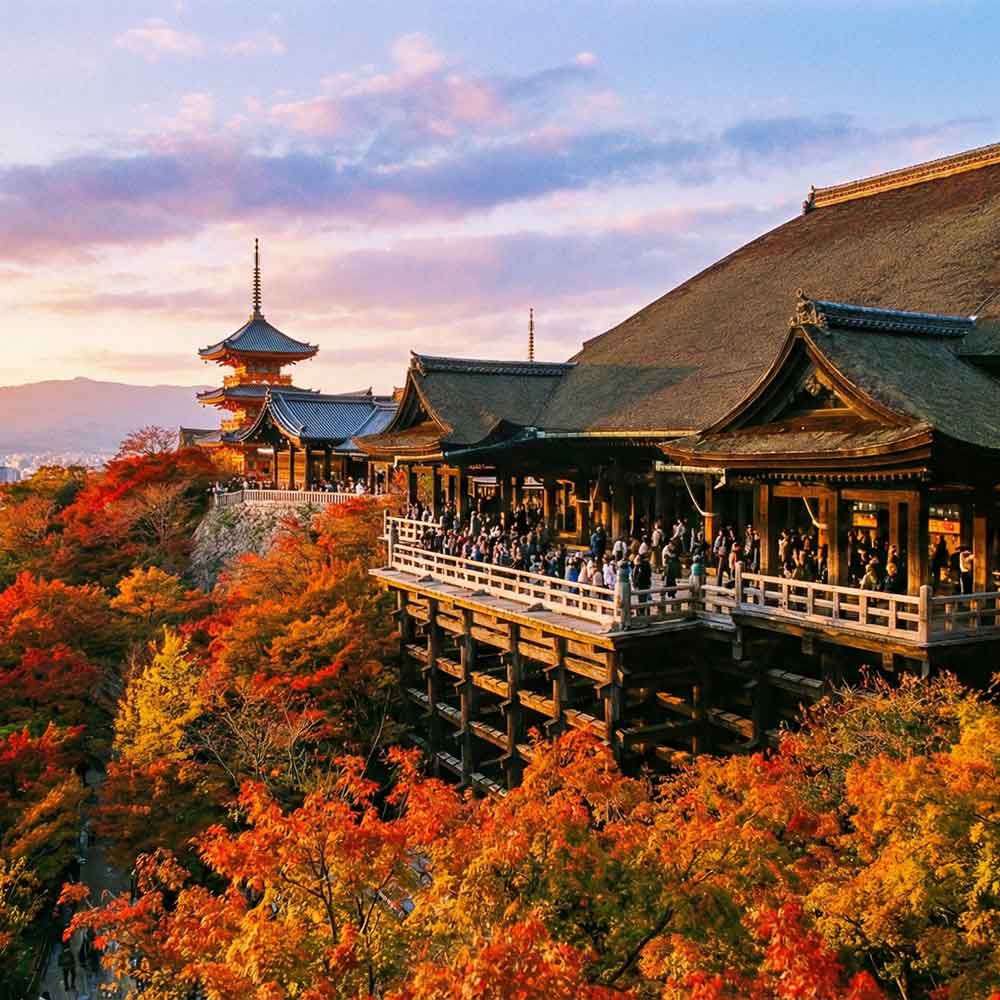

観光案内向けになっているので、内容は必要に応じて入れ替えて下さい。

「清水の舞台」で有名。古都京都の風情と、四季折々の絶景を一望できます。
朱色の千本鳥居が幻想的なトンネルを作る、海外からも人気の高い神社です。
黄金に輝く舎利殿と鏡湖池のコントラストが美しい、京都を代表する名刹です。
天高く伸びる竹林に囲まれた癒やしの空間。着物での散策にもおすすめです。
石畳の路地に京町家が並ぶ風情ある通り。運が良ければ舞妓さんに出会えるかも。
該当するスポットが見つかりません。
javascriptを使った簡易検索です。 あらかじめ、キーワードをhtml側のdata-keywordに入れておいて下さい。 キーワード検索欄にテキストを入力するとリアルタイムで検索結果が出ます。
ここのメニューはhtmlの下の方にあるmenubarのブロックです。ヘッダー下のメニューでは足りない場合に使って下さい。 不要であれば、ここのmenubarブロックと、すぐ下にあるmenubar_hdrブロックを削除すればOK。